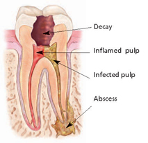
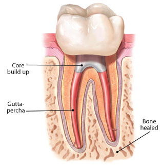

Has your dentist told you that you need root canal treatment? If so, you're not alone. Millions of teeth are treated and saved each year with root canal, or endodontic treatment.Endodontic treatment treats the inside of the tooth. Endodontic treatment is necessary when the pulp becomes inflamed or infected. The inflammation or infection can have a variety of causes: deep decay, faulty crowns, or a crack or chip in the tooth. In addition, trauma to a tooth may cause pulp damage even if the tooth has no visible chips or cracks. If pulp inflammation or infection is left untreated, it can cause pain or lead to an abscess.

During root canal treatment, the inflamed or infected pulp is removed and the inside of the tooth is carefully cleaned and disinfected, then filled and sealed with a rubber-like material called gutta- percha. Afterwards, the tooth is restored with a crown or filling for protection. After restoration, the tooth continues to function like any other tooth. Crown modern root canal treatment is very similar to having a routine filling and usually can be completed in one or two appointments, depending on the condition of your tooth and your personal circumstances. You can expect a comfortable experience during and after your appointment.Endodontic treatment helps you maintain your natural smile, continue eating the foods you love and limits the need for ongoing dental work. With proper care, most teeth that have had root canal treatment can last as long as other natural teeth and often for a lifetime.